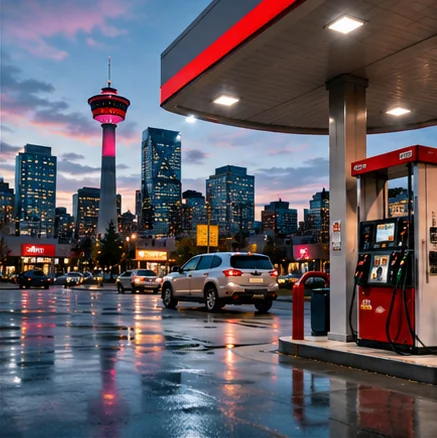
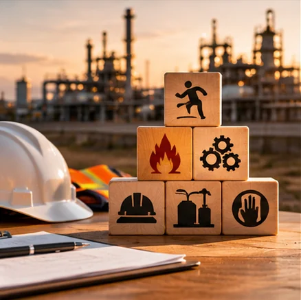
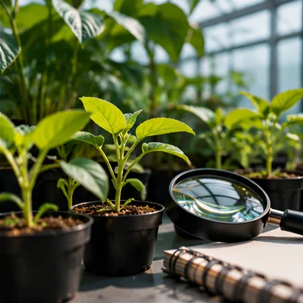
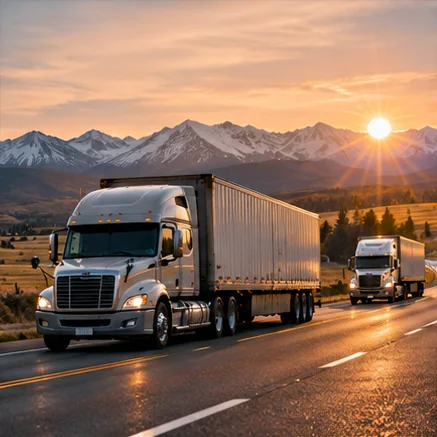
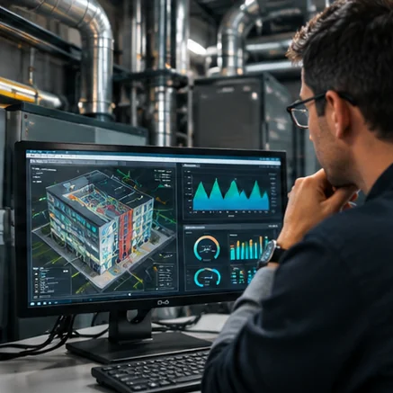
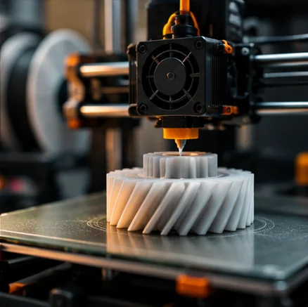

Pipeline Safety Intelligence
An evidence-led investigation of Canadian pipeline occurrences: data preparation, interactive dashboard, 12 analytical questions and 15 recommendations.
3,433 occurrencesTSB Canada
Live application
Explore project ↗A living collection of process safety intelligence, engineering analytics, practical AI, and educational experiments. Every project connects a challenge with evidence, an approach and something tangible to explore.
Our lead project combines data preparation, interactive visual analysis and decision-support recommendations. Counts from recorded occurrences are not equivalent to operator risk rankings.
Explore Canadian pipeline occurrence records through a governed analytical workflow: 12 questions, a searchable dashboard and 15 recommendations for responsible review.
Conceptual AI-generated imagery; not a photograph of an occurrence or a specific pipeline asset.
Machine-learning fault detection for boiler plants, combined with digital training and transparent model governance. An engineering education project, not an autonomous plant-control system.
Live service availability should be checked; the host recently returned a 503 response.

Explore published applications, evidence-based studies, prototypes and early-stage concepts. Publication status is explicit on every card.
An evidence-led investigation of Canadian pipeline occurrences: data preparation, interactive dashboard, 12 analytical questions and 15 recommendations.
Boiler-plant fault-detection study with machine learning, engineering training resources, governance and an interactive digital experience.

One flagship ChatGPT forecasting workflow, five supporting AI approaches and a transparent comparison of model evaluation methods.

An interactive safety-education game designed to reinforce fundamental safety concepts through exploration and feedback.

A public plant-learning quiz that turns curiosity about nature into an accessible educational exercise.

Fleet and delivery-site analytics exploring fuel use, vehicle activity, trip duration, distance and idle time.

Energy-data and building-performance analysis; an exploratory initiative distinct from the SteamWise fault-detection application.

Additive manufacturing and practical 3D-printing examples, including hand-shaped prototypes and articulated mechanisms used in safety learning.
Document-grounded construction handover assistant for completion, commissioning, PSSR, maintenance readiness and operational handover; does not authorize safety-critical actions.
Creative drawing, animation and playground application credited on its published site to Josué Galarza. Featured as a family creative initiative.
Experiments with project assistants, including a public SteamWise learning assistant and exploratory resume support tools.
Photo-based screening of surface cracks, moisture and signs of deterioration, with documented ambiguous and false-positive tests.
Plant-leaf image analysis exploring disease indicators, healthy foliage and seasonal-colour ambiguity.
Construction-image PPE and hazard observation prototype with reviewable findings and reporting; not an autonomous safety assurance tool.
Oil-spill versus no-oil-spill classifier trained on 246 labelled images, with held-out testing documented.
Visual classification learning exercise with five correct outcomes in six documented trials.
Construction handover support assistant previously exercised with users; public access URL and deployable files remain unavailable here.
Five-iteration regression challenge with a hybrid fare-formula and Random Forest fallback; previously reported Kaggle MAE 2.52019.

Corporate safety facilitation built around reflection, collaborative practice and 3D-printed learning devices.
Interactive 3D creative application with a supplied app URL. Public access could not be verified independently; visitors may need permission.

Personal wardrobe-styling assistant shared as an AI application experiment. Public access currently redirects to authentication.
Photorealistic concept images are AI-generated illustrations. They are not claims of actual field photography or screenshots from deployed applications.
From construction defect vision and leaf-condition screening to safety observations, fare prediction and the SteamWise capstone, each exercise is presented independently with its actual development status.
Every catalogue card opens a working internal project page. External launch buttons are included only where a concrete link has been supplied.
Galarza Lab complements the professional portfolio with practical and educational solutions. It emphasizes structured analysis, process safety, clear assumptions and responsible use of AI.
Each project is identified as a live application, documented study, prototype, or concept. Illustrations are clearly differentiated from actual project evidence, and simulations do not replace qualified engineering decisions.
Visit professional portfolio ↗